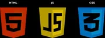
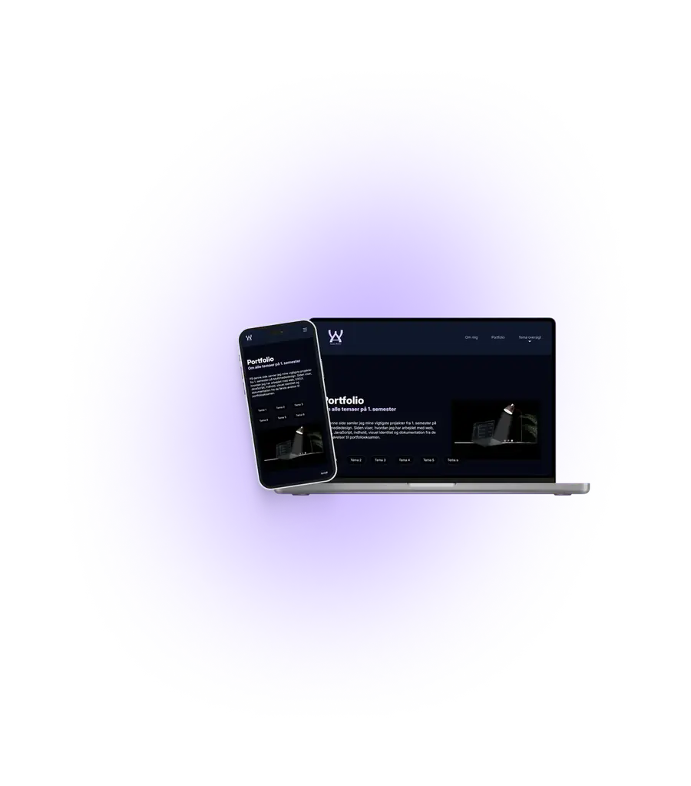

Tema 1
Videoopgave og GitHub påbegyndelse
Introduktion til semesteret, idéudvikling, samarbejde, digital produktion og publicering.
Se temaJeg samler mine projekter, min proces og min læring fra 1. semester. Portfolioet viser mit arbejde med web, UX/UI, JavaScript, indhold og designproces.


Klik videre og se løsning, proces og refleksion for hvert tema.
Introduktion til semesteret, idéudvikling, samarbejde, digital produktion og publicering.
Se temaHTML, CSS, semantisk struktur, CSS grid, layout og responsive webdesign.
Se temaResearch, moodboard, style tile, wireframes, prototype, brugertest og kunstsite.
Se temaJavaScript, SVG, formularer, interaktivitet, feedback og usability.
Se temaDesign brief, indholdsproduktion, visuel identitet, style tile og virksomhedssite.
Se temaInformationsarkitektur, navigation, responsivt portfolio, dokumentation og refleksion.
Se tema